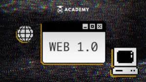

Web 1.0: The Static Web
What is Web 1.0?
Web 1.0 refers to the first stage of the World Wide Web's evolution, roughly spanning from 1991 to 2004. It is often described as the "Read-Only Web" because the vast majority of users were consumers of content rather than creators. Websites were mostly informational and built with static HTML.
Core Characteristics
During the Web 1.0 era, the internet looked very different than it does today:
- Static Pages: Content did not change unless the webmaster manually updated the file and re-uploaded it.
- One-Way Communication: Users searched for information and read it, but there were no comment sections, likes, or social media.
- GIF Buttons and Frames: Design was simple, often using small graphics and framesets to organize layout.
- Guestbooks: The only real form of interaction was often a simple guestbook where visitors could leave a name and a short message.

The Technology of the Era
Web 1.0 relied on basic technologies like HTML 2.0 and 3.2, and simple protocols like HTTP and FTP. Most people accessed these sites via dial-up connections and browsers like Netscape Navigator or early versions of Internet Explorer. It served as a massive digital library for the world.